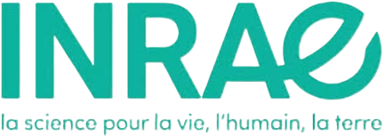

연구 주제
Research
기후변화와 함께 매개충 감염병의 위험이 전 지구적으로 확대되고 있습니다. 흡혈 생리의 기초 기전에서 검역 진단과 저항성 관리까지, 다섯 개 축으로 연구를 수행합니다.

Haemaphysalis longicornis
국내에서는 작은소피참진드기(Haemaphysalis longicornis)가 매개하는 중증열성혈소판감소증후군(SFTS)이 2013년 첫 보고 이후 매년 지속적으로 발생하고 있으며, 일본참진드기가 매개하는 라임병과 모기 매개 질병 또한 관리 대상으로 남아 있습니다.
본 연구실은 매개충의 흡혈 생리를 분자 수준에서 해독하는 것을 목표로 합니다. 참진드기가 숙주에 부착하고, 급속흡혈기에 체적을 수십 배로 팽창시키는 과정은 신경내분비 신호와 체벽 구조 재편이 정교하게 맞물린 결과입니다. 저희는 이 과정을 조직 · 분자 · 기능의 세 층위에서 해부하고, 여기서 확보한 표적 유전자를 차세대 방제 기술로 발전 · 연결하고자 합니다.
아울러 분자진단과 인공지능 기반 동정 체계를 개발하여, 실험실의 기초생리학을 검역과 예찰이라는 현장 과제로 확장하고 있습니다.
Research Topic · 주제를 클릭하면 세부 내용이 열립니다
01
급속흡혈 조절 신호 네트워크 (Signaling Network Governing Rapid Engorgement)
급속흡혈기의 초기 18시간에는 표피 가소화와 중장의 기능 전환 등 생리적 변화가, 마지막 12시간에는 표피 팽창과 체중 급증 등 형태적 변화가 일어납니다. 어떤 조직이 어떤 순서로 이 과정을 지휘하는지를 규명합니다.
- 조직 수준 – 난소 · 중추신경계 · 침샘 · 중장 · 혈림프 추출물의 급속흡혈 유도 활성 검정 및 단계적 조절 축 도출
- 분자 수준 – 전사체 · 단백체 분석, HPLC-ECD 기반 생체아민 정량, LC-MS/MS 엑디스테로이드 · 유약호르몬 동역학
- 기능 수준 – RNAi knockdown, 재조합 단백질 rescue assay, 생체아민 작용제 · 길항제 약리 검증
- 통합 – 상 · 하위 신호의 계층구조 규명 및 급속흡혈 조절 신호 네트워크 모델 완성

선행 성과
두 종류 도파민 수용체 knockdown 시 급속흡혈기간이 최대 80시간 지연되고 표피 팽창과 체중이 각각 44%, 45% 감소함을 규명하였으며, 옥토파민 수용체와의 이중 knockdown에서 표피 팽창이 최대 50%까지 감소함을 확인하였습니다. 생체아민 축은 조절 체계의 일부이며, 나머지 인자의 탐색이 현재 연구의 초점입니다. (Hwang and Kim, 2025 IBMB)
02
큐티클 팽창의 이중 신호 축 (Dual-Axis Regulation of Cuticle Expansion)
큐티클은 급속 팽창을 가능하게 하는 생체역학적 적응이면서, 동시에 수분 손실과 접촉성 살비제의 침투를 막는 최외곽 방벽입니다. 본 연구실은 이 구조 변형이 두 개의 독립적 호르몬 축에 의해 조절된다는 가설을 검증합니다.
- 제1축 · 생체아민 – 도파민 · 옥토파민 수용체를 통한 큐티클 가소화 조절
- 제2축 · 키틴합성/엑디손 – 엑디스테로이드 상위 조절 기반 키틴 합성 및 신규 큐티클 공급
- 수렴 검증 – 조합 knockdown의 가산적 · 상위적 효과 판정을 통한 분자노드 규명
- 응용 전개 – 큐티클 민감화를 통한 기등록 살비제 감수성 증진 및 신규 방제 표적 발굴
방법론
모든 분석은 급속흡혈 개시 시점(RE0) 기준 상대 시간 축으로 정렬하며, 전사체 · 단백체 교차검증(cross-omics convergence)을 통과한 후보만 다음 단계로 진행합니다.
03
진드기 매개 병원체 스크리닝 (Tick-borne Pathogen Screening)
국내에서는 SFTS 바이러스 외 잠재적 · 미보고 병원체에 대한 조사와 데이터 구축이 미진합니다. 단일 진드기에 감염된 다수 병원체를 한 번에 검출하는 고속 스크리닝 체계를 프랑스 연구진과 함께 도입하고 있습니다.
- High-throughput microfluidic real-time PCR 기반 단일 진드기 다중 병원체 스크리닝
- 진드기 뇌 · 침샘 특화 면역조직화학법 및 투과현미경법 기술 이전
- 검출 병원체 표적 신속 진단 키트 개발 및 지자체 공급
- 단성/양성생식 개체군의 지역별 분포와 보균 병원체 상관성 분석

04
분자진단 및 AI 동정 체계 (Molecular Diagnostics and AI-based Identification)
검역과 매개체 감시의 병목은 동정입니다. 참진드기는 발육단계 · 성적 이형 · 흡혈 전후 체적 변화로 오동정 위험이 크고, 등에모기는 크기가 작고 종내 변이가 커서 형태 형질 단독으로는 종 판별에 한계가 있습니다. 분자진단과 AI 동정이라는 두 경로로 이 병목을 해소합니다.
- AI 동정용 형태 데이터셋 (Deep-learning Dataset)
- 참진드기 10종 · 등에모기 35종의 학습용 데이터셋 구축
- 형태학적 동정과 mtCOI DNA 바코드 검증 병행
- 발육단계 · 성별 · 흡혈상태 · 형질부위별 다층 이미지 생산
- 검역관이 AI 판정 근거를 검토할 표준영상 및 검색도해 작성
- 환경 DNA 기반 조기탐지 (eDNA Early Detection)
- 고위험 사과 해충 3종(코드린나방, 오리엔탈과실파리, 타우과실파리) 표적 조기탐지
- 환경조건별 eDNA 추출법 표준화 및 종특이적 프라이머 설계
- Cocktail 프라이머 기반 multiplex PCR 다중 종 진단
- LAMP 기반 현장 진단 키트 개발 및 실증


병행 과업
살충제 저항성 메타분석 및 작용기작(MOA)별 방제 효율성 정량 평가, 유입 시나리오별 방제 의사결정 알고리즘, 질병 매개체(모기 · 참진드기 · 털진드기) 및 검역해충 발생 밀도 조사
05
살충제 저항성 모니터링 및 방제 전략 (Insecticide Resistance Monitoring and Control Strategy)
살충제 저항성은 방제 실패와 농약 오 · 남용으로 직결되지만, 어느 지역에서 어느 약제에 저항성이 발달했는지에 대한 정량적 지도는 아직 충분하지 않습니다. 전국 단위 개체군을 표준화된 생물검정으로 평가하여, 농업 현장이 실제로 활용할 수 있는 저항성 데이터베이스를 구축합니다.
- 주요 농업해충 7종(꽃노랑총채벌레, 목화진딧물, 점박이응애, 담배가루이, 복숭아혹진딧물, 조팝나무진딧물, 볼록총채벌레) 대상 권역별 저항성 검정
- 시 · 군별 농가 개체군 확보 및 농약사용기록표 기반 방제력 분석
- 대상 해충의 연중 실내 사육 체계 구축 및 표준 생물검정법 적용
- 약제별 · 지역별 저항성 지도 및 데이터베이스 작성
- 살충제 저항성 메타분석 및 작용기작(MOA)별 방제 효율성 정량 평가
- 유입 시나리오별 방제 의사결정 알고리즘 및 해충별 약제 추천 매뉴얼
연구 기반
Research Infrastructure
동물흡혈시스템 ESTABLISHED 2021
참진드기는 알–유충–약충–성충 전 발달단계에서 흡혈이 필요해 생활사 완결에 최소 4개월이 소요되며, 실험실 개체군 유지가 매우 어렵습니다. 본 연구실은 2021년부터 작은소피참진드기 단성생식 · 양성생식 개체군을 연중 계대사육하며 분자생리학 실험을 수행하고 있습니다. 이 사육 기반은 모든 연구 축의 전제 조건입니다.
보유 기술 및 장비
- Immunohistochemistry 검증 항체패널 — anti-D1 / InvD1L / OAR-α / OAR-β
- Heterologous expression system — 세포 기반 수용체 활성 분석 플랫폼(cAMP · Ca²⁺ 리포터)
- RNAi 기반 유전자 분자생리적 기능 검증 체계
- NGS 데이터 분석 및 딥러닝 기반 영상 분석 파이프라인
- 형광현미경 이미징 시스템(Leica DM-2500)
- 실체현미경 이미징 시스템(Leica M205C · Nikon SMZ745T · Olympus SZ51)
- 살충제 생물검정(Bioassay)
연구과제
Research Funding
2026년 기준 수행 중인 연구개발과제입니다.
| 과제명 | 지원기관 | 기간 |
|---|---|---|
| 급속흡혈 조절 분자생리적 신호 네트워크 구명핵심연구 유형A | 한국연구재단 | 2026–2030 |
| 참진드기 급속흡혈기 큐티클 팽창 조절 이중 신호 네트워크 규명과 살비제 감수성 증진 | 한-체코 공동연구사업 | 2026–2029 |
| 딥러닝 활용을 위한 검역병해충 분류 기반 데이터셋 구축동물질병 매개체 분야 | 농림축산검역본부 | 2026–2028 |
| eDNA 기반 사과 해충 조기 탐지 기술 및 관리 방안 개발국경 이동성 원예작물 해충 | 농촌진흥청 | 2026–2030 |
| STAR for tick research — 진드기 신경생리 및 병원체 고속 스크리닝 | 한-프랑스 협력기반조성사업 | 2026–2028 |
| 저항성 우려 농약에 대한 해충 모니터링공동연구 참여 | 농촌진흥청 | 2025–2028 |

국제 협력
International Collaboration
France
UMR-BIPAR · ANSES / INRAE / EnvA
Dr. Ladislav Simo (MiTick 팀장, NeuroTick 그룹) 연구진과 진드기 신경생리 및 고속 병원체 스크리닝 기술을 교류합니다. 경북대학교 생태환경대학과 INRAE 간 국제공동연구협약을 추진하고 있습니다.
Czech Republic
Institute of Parasitology, Biology Centre CAS
Dr. Jan Perner (Disease Vectors and Pathogens) 연구진과 큐티클 구조 · 오믹스 · 초미세구조 국소화를 공동 수행합니다. 한국의 신호분자 탐색과 체코의 구조 분석이 상호 검증하는 구조입니다.
United States
Kansas State Univ. · Pennsylvania State Univ. · Univ. of Florida
Dr. Yoonseong Park, Dr. Jason Rasgon, Dr. Daniel Swale 연구진과 오믹스 분석 및 재조합 단백질 기반 공동 실험을 수행해 왔습니다. 국내 미유입 검역해충인 코드린나방에 대해서는 미국 현지 발생지를 대상으로 eDNA 검출 기술의 현장 검증을 추진합니다.
국내 컨소시엄
Domestic Network
국립순천대 · 전북대 · 부산대 · 영남대(검역 AI), 제주대 · 경상국립대 · 서울대(국경 이동성 해충), 가천대 · 전남대 · 충남대(저항성 모니터링) 등 다기관 컨소시엄에 참여하고 있습니다.